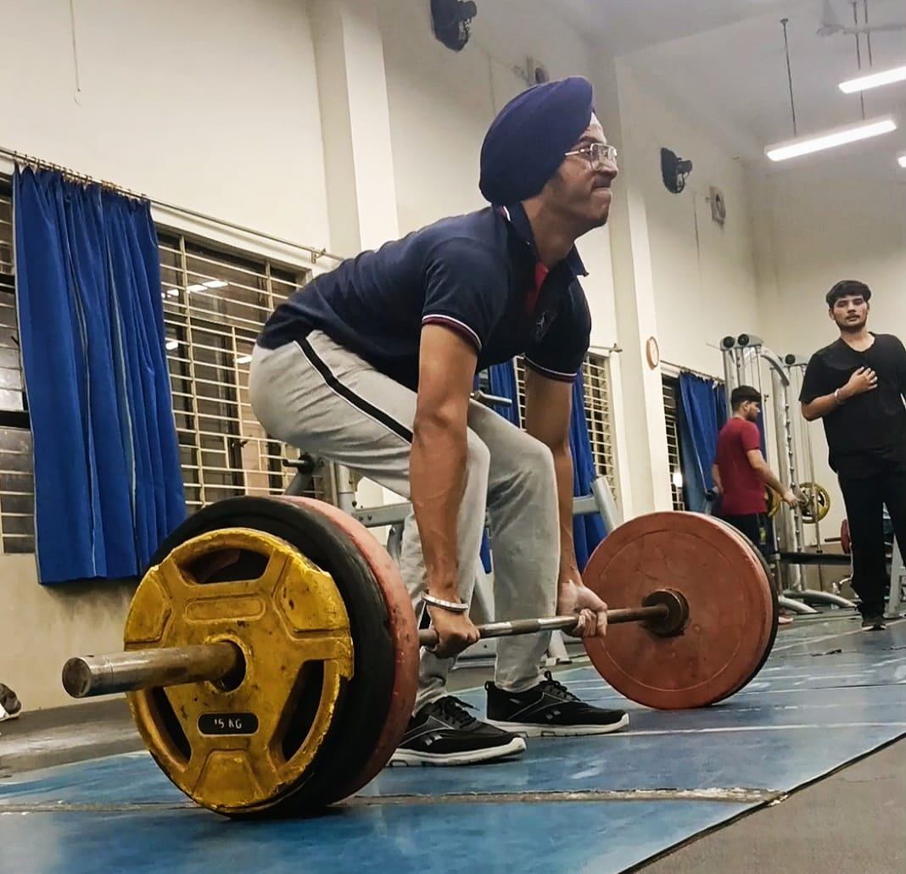
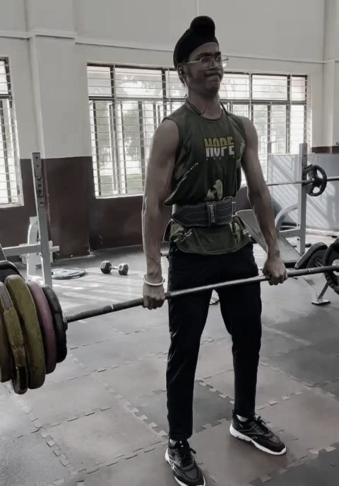

Teaching
I love teaching,seeing my keen interest in it as a profession ,I started teaching the foundation classes og the institute at the institute from which I completed my JEE journey.I used to teach Mathematics and Physics to student of classes IX & X.
I continued this hobby for almost two years until I completed my 2nd semester of my college.
The students are still in touch with me which is the most valuable thing I earned from this hobby.
Gymming
I like daily gymming a lot.The 2 hours spent at the gym are my favourite two hours of the day,the kind of energy and potential unleashed is insane,here are some of my gym pics,compared to my earlier pic(sort of transition)

This is my pic before college time.
This is my current physique.
What about Deadlift??
How can a gymrat skip deadlift??,so here it is:
It's a 150Kg

It's a 140.